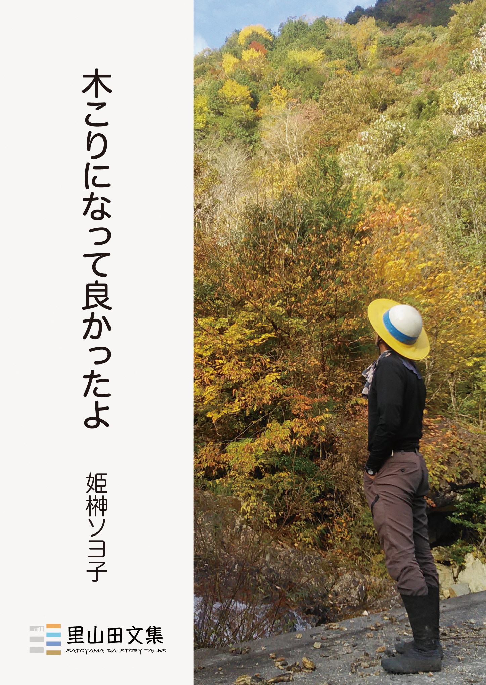

林業と田舎暮らしの図書
『木こりになって良かったよ』

書籍の概要
「俺、丈夫んなったよ…じいちゃん」（本文より）
林業経営論や林業技術についてのHow toではなく、林業人生の素晴らしさを伝えるヒューマンドキュメント。
林業転職歴10年の著者：姫榊ソヨ子（ヒサカキソヨゴ・筆名）が岐阜と高知での森林整備と地域での暮らしのようす、そこに生きることのリアルを綴った、50のエッセイと4篇のルポルタージュです。
ほか付録に、里山保全活動と地域の居場所づくりの記録「里山新聞」、林業・移住関係者の生の声を募集掲載した「木こりボイス」、クラウドファンディングでのプロジェクト実現までの「軌跡」を所収しています。